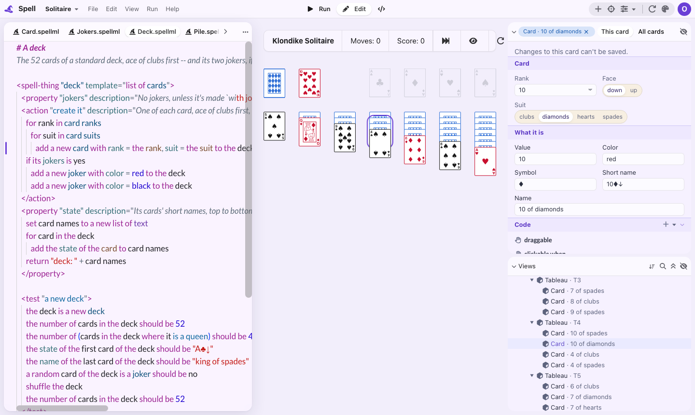
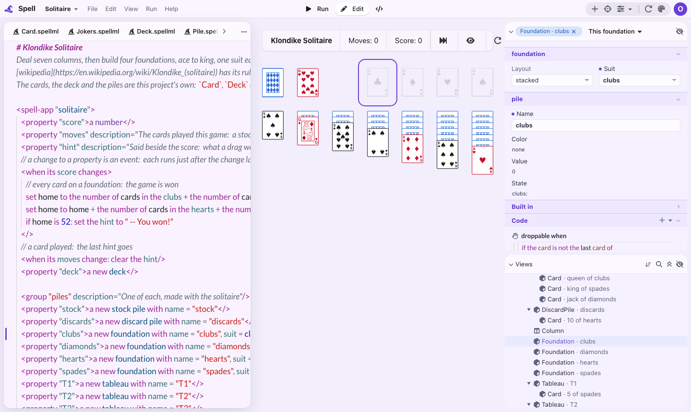
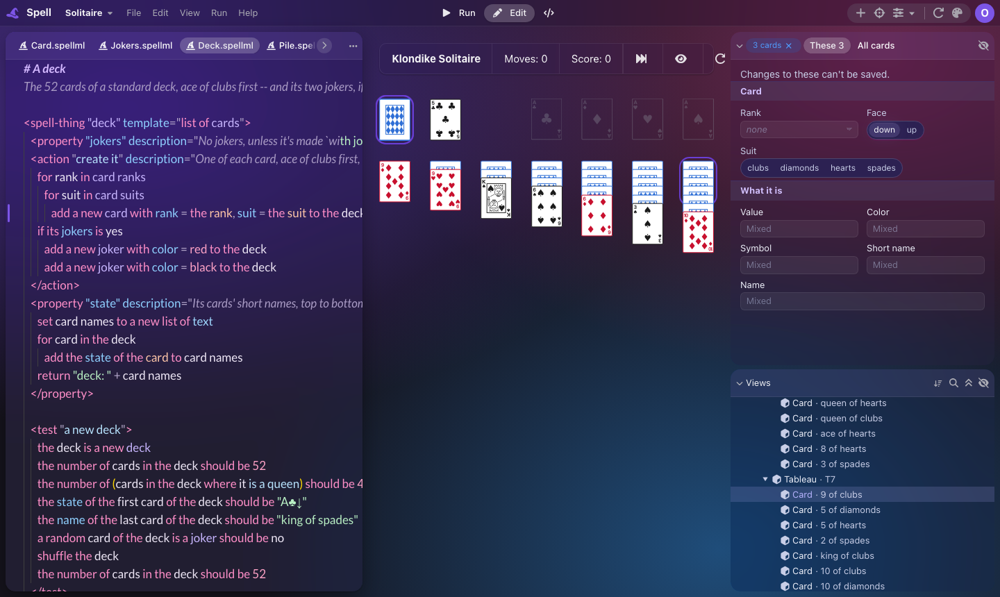
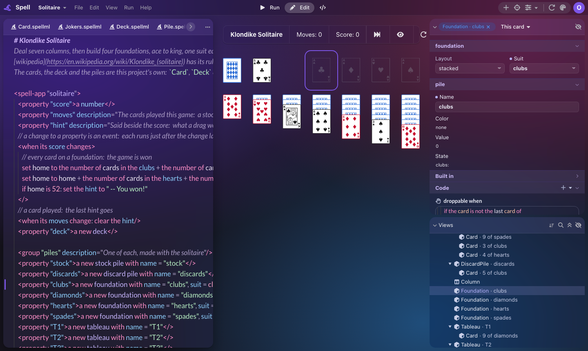

Edit Scope: what This and All should do
I tried editing one thing, several things and a whole kind of thing in Solitaire. Here's what felt wrong, and three calls to make before anything is built.
What I tried
-
One card. It starts on This card, with "Changes to this card can't be saved." Its rank and
suit come from the loop in the deck (
add a new card with rank = the rank, suit = the suit), so nothing about one card can be written down. All cards makes every field read only, with "Each card gets these from the code that makes it." So for the thing you'd most want to change, neither side changes anything.
-
One foundation. This works: This foundation writes its own line (
a new foundation with name = "clubs", suit = clubs), All foundations writes the type's default. But "This foundation | All foundations" is too long for the row, so it turns into a dropdown that hides the other choice, and the side bar's groups are titled in lower case (foundation, pile) beside Card.
-
Three cards. These 3 | All cards, every differing field shows Mixed, and "Changes to these
can't be saved." Three foundations would write three lines; three cards write nothing.

-
The type itself (a card's file,
Card.spellml) has no way in from the side bar except Show in Code.
How the side bar finds the code
- Drawn tags and property values are found from the parse: the compiler marks each drawn tag with its place, and the property homes read the parsed program, so they work in every language.
-
A type's events, abilities, actions and property editor are found by reading the words with about
30 text patterns, with English and Spanish words written into them (
an?|una?,where|donde,to ...). That's why some actions aren't found (Solitaire's count the points for a card on a pile), and why a third language would need new patterns. - Two things could answer instead: the compiler could mark every declaration with its place, as it already marks drawn tags; or the language service, which already lists a file's symbols for VS Code, could be asked.
A card is made by a loop, so This card can't be saved and All cards is all read only. What should the switch do for things like that?
All cards shows only what the card's own file can change (its look, its face-up default), and links rank and suit to the loop that sets them. This card stays for playing.
What you'd see: pick All cards, change Face to up, and Card.spellml's default changes for every card. Rank and suit show as "set by the deck" with a link to that line.
All cards writes into add a new card with ..., so a value set there applies to
every card the loop makes.
Works for fields the loop doesn't already set; rank and suit still can't change, since they're the loop's own variables.
Keep today's note and read-only fields; revisit once drafts land.
With three foundations selected, each has its own line, so an edit could write all three. Today every multi-selection says "Changes to these can't be saved."
These 3 writes the same change into each selected thing's own line, as one undo step; things made in a loop still only play.
Three foundations, set Layout to fanned: three lines change in Solitaire.spellml, and one ⌘Z puts them back.
Several selected stays for trying things out; to save, pick one at a time or use All.
Events, actions and the property editor are found by reading English and Spanish words with text patterns, which misses some and won't scale to a third language.
The compiler records where each type, property, event and action is declared, as it already does for drawn tags; the side bar reads those places. Every language, nothing missed.
Replaces the text patterns behind the Code band and the property editor, and P21's finder. Roughly a phase of its own in the parser and the side bar, 4-6h.
Use the symbols the language service already gives VS Code. It loads the parser into the side bar, which is heavy in the public preview.
Fix misses as they're found; add a pattern per language.
"This foundation | All foundations" doesn't fit, so it becomes a dropdown; short names show both sides. One look, or two?
This | All, always both sides shown, the kind named once in the selection chip beside it (Foundation · clubs).

As today: both when they fit, a dropdown otherwise.